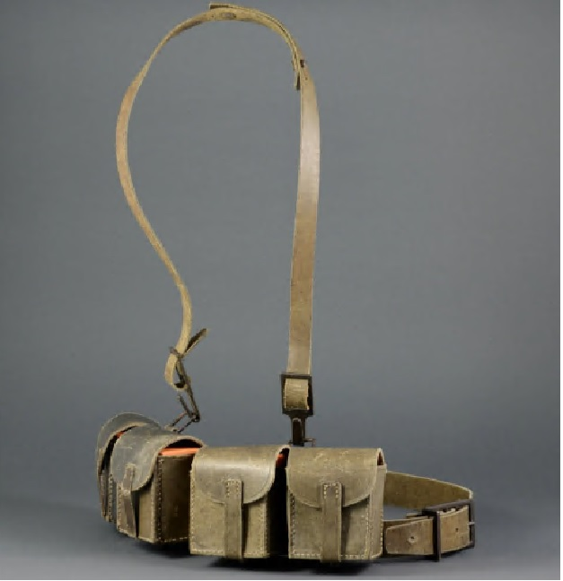

Contro
pedale
Diari di un Gibernauta
Sedicente atleta la cui robusta sagoma pare celare, sotto l’aderente maglietta di lycra, una cintura di giberne. In realtà non di giberne si tratta, ma di una strategica scorta lipidica — che però resta sempre tale.
C’è chi scala l’Everest. Chi corre per giorni intorno al Monte Bianco. Il Gibernauta scala il Passo Bondone imprecando sottovoce, corre il lungonaviglio all’alba con amici impietosi, e porta le sue giberne su e giù per la Pianura Padana con la stoica fierezza di chi sa che il bar al passo sarà aperto. Tredici anni di pedalate, forature, grandinate, cani randagi, salami in Oltrepo’ e incontri con Cancellara e Sciapuscì — raccontati come solo un vero gibernauta sa fare.

Giberne da campo — armeria storica
Eredità del Gibernauta